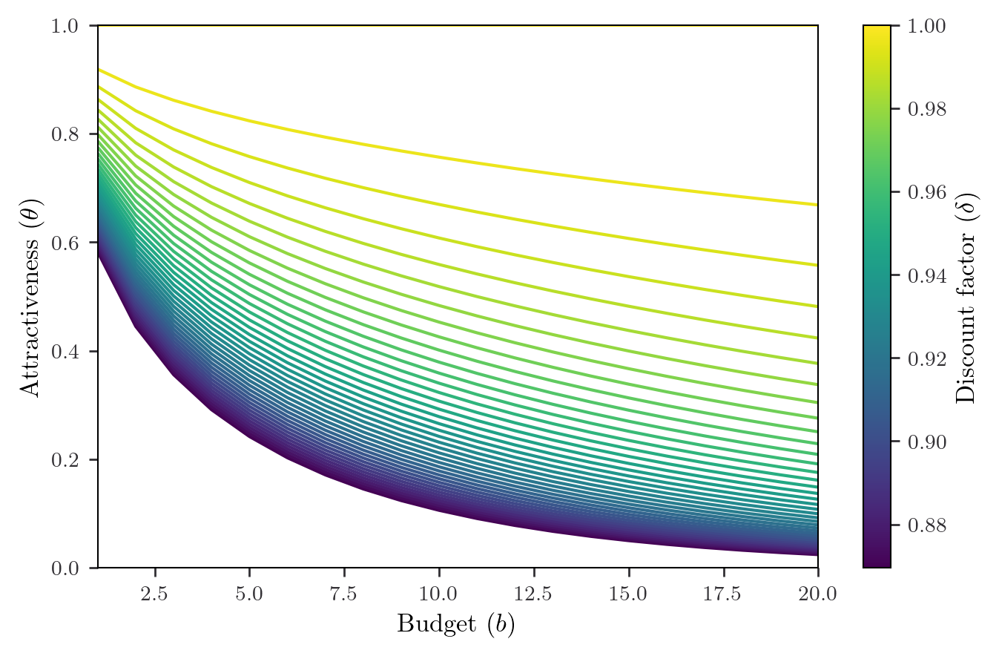
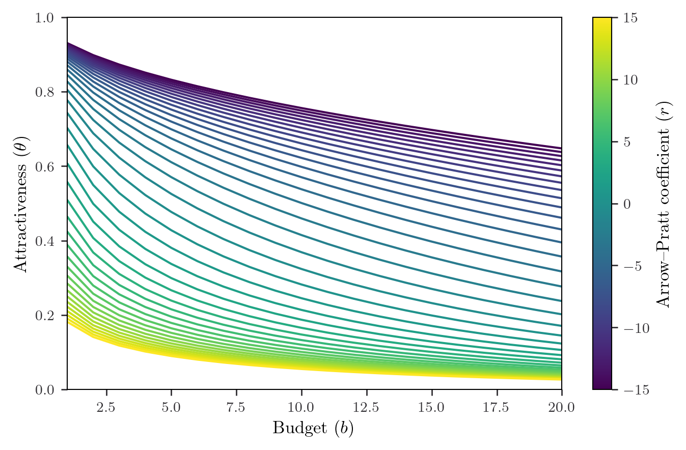
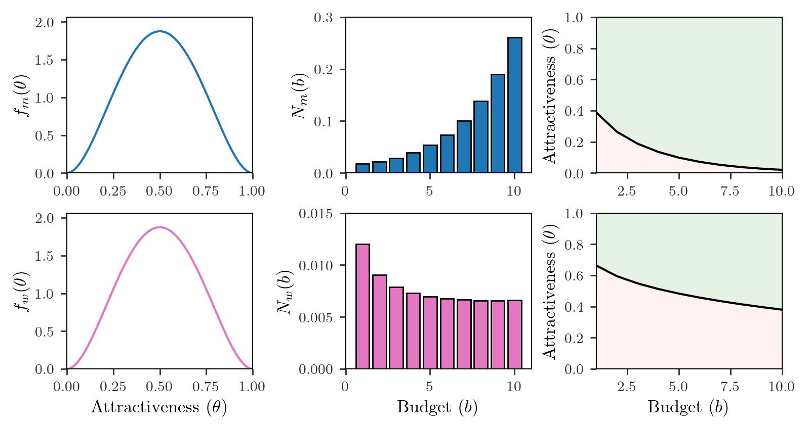
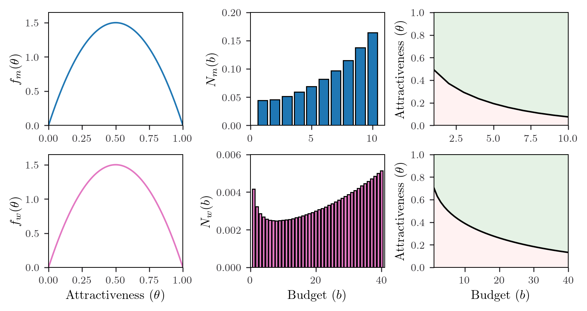
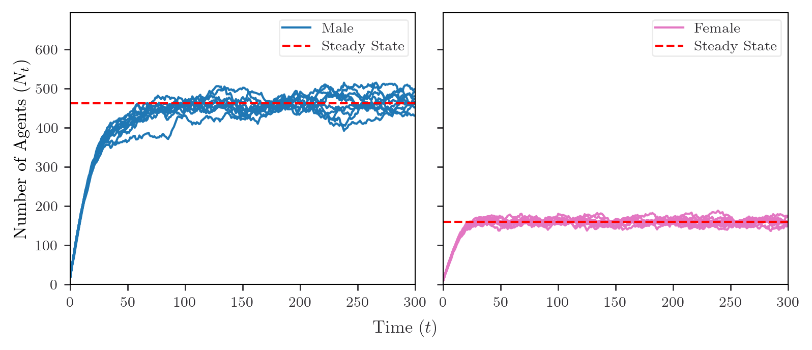
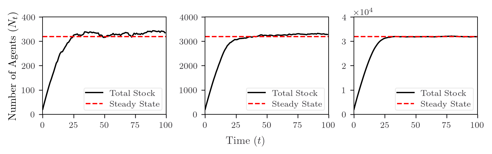
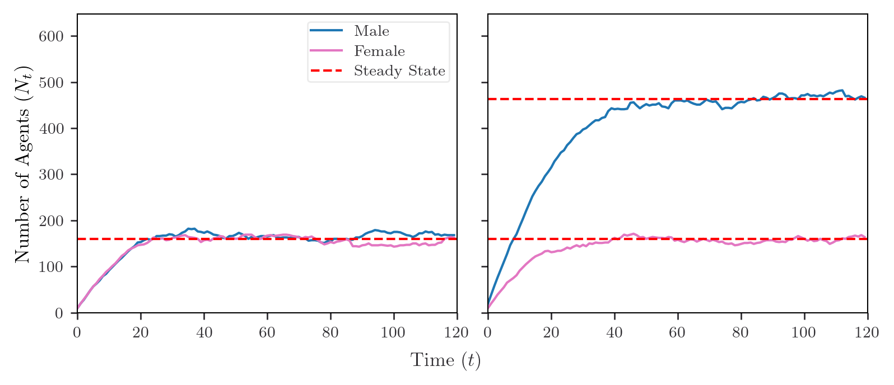

Why Do Men Keep Swiping Right?
Two-Sided Search in Swipe-Based Dating Platforms
Patricio Hernandez Senosiain
Overview
- Introduction
- Related Work
- Theoretical Model
- Equilibrium
- Simulations
- Conclusion
Introduction
- SBDP’s and the modern dating market
- Agents are presented with suggestions to swipe left or right on
- Matches occur given a double coincidence of wants
- Love is tricky; SBDP’s make it worse…
- Dynamic interactions are harder due to repeated game complexities
- How do agents strategise their search? What outcomes emerge in equilibrium?
- The ‘Fast-Swiping Men’ puzzle
- Men have higher swiping rates but face worse market outcomes… why?
- Lots of empirical evidence, but no theoretical analysis
- Related work:
- Two-Sided Search: Burdett and Wright (1998), Adachi (2003), Mekonnen (2019)
- Mean Field Games: Jovanovic and Rosenthal (1988), Iyer et al. (2014)
- SBDPs: Kanoria and Saban (2021), Olmeda (2021), Tyson et al. (2016)
The stage interaction
- Fix a continuum of heteronormative male and female agents.
- Time is discrete and indexed by \(t = 0, 1, 2, ...\)
- Suggested partners have attractiveness type \(\theta_t \in \Theta := [0, 1]\).
- Attractiveness is sampled i.i.d from absolutely continuous CDF’s, \(F_m, F_w\).
- Action space is \(\mathcal{A} = \{1, 0\}\), where \(a_t = 1\) indicates a right-swipe.
- Matching payoff is given by \(u(\theta_t)\), where \(u(\cdot)\) is continuous, strictly increasing, and satisfies \(u(0) = 0\).
- Agents are constrained by a swiping budget which evolves according to \(b_{t+1}=b_t -a_t\)
- Focus (clarified later) is on pure symmetric stationary strategies, \(\mu: \Theta \times\mathcal{B}_m\rightarrow \mathcal{A}\) for men and \(\omega:\Theta \times\mathcal{B}_w\rightarrow \mathcal{A}\) for women.
The dating market
Let \(N_{mt}(b), N_{wt}(b)\) denote the masses of men and women at specific budget levels.
Each period, masses \(\lambda_m, \lambda_w\) of men and women arrive in the market.
When the market is imbalanced, agents are presented suggested partners according to Bernoulli process with probabilities:
\[\tau_{mt} := \min \left\{\frac{\sum_{b\in\mathcal{B}_w}N_{wt}(b)}{\sum_{b\in\mathcal{B}_m}N_{mt}(b)} , 1 \right\},\quad \tau_{wt}:= \left(\frac{\sum_{b\in\mathcal{B}_m}N_{mt}(b)}{\sum_{b\in\mathcal{B}_w}N_{wt}(b)} \right) \tau_{mt}\]
Lifetime is geometrically distributed with probability of death \((1-\delta)\).
Focus on behaviour in the stationary market \(\Psi=(N_m,N_w)\).
Market stationarity conditions
- Balanced entry/exit into the market:
\(\lambda_w\;=\; \underbrace{ (1-\delta)\sum_{b\in\mathcal{B}_w}N_{w}(b)}_{\text{Exogenous Outflow}} \;+\; \underbrace{N_w(1) \int_{\Theta} \tau_w \delta \, \omega(\theta,1)\,dF_{m}(\theta)}_{\text{Endogenous Outflow}}\)
- Balanced entry/exit between budget levels:
\(\underbrace{N_w(b+1) \int_{\Theta} \tau_w \delta \,\omega(\theta,b+1)\,dF_{m}(\theta)}_{\text{Inflow into $b$}} \;=\; \underbrace{N_w(b) \Big( (1-\delta) \;+\; \int_{\Theta} \tau_w \delta \, \omega(\theta,b)\,dF_{m}(\theta)\Big)}_{\text{Outflow from $b$}}\)
- Balanced entry/exit at the top budget level:
\(\lambda_w \;=\; \underbrace{N_w(B_w) \Big( (1-\delta) \;+\; \int_{\Theta} \tau_w \delta \, \omega(\theta,B_w)\,dF_{m}(\theta) \Big)}_{\text{Outflow from $B_w$}}\)
Mean-field effects
Consider the search problem of a woman searching in steady-state market \(\Psi\).
Towards a mean field assumption:
- Agents maximize expected utility, conditional on beliefs for all unknowns.
- Beliefs over market histories are both infeasible and computationally intractable.
Assume steady-state market and consider only the average interaction, then the ex-interim expected payoff is: \(U(\theta,a) = \overline\mu a u(\theta)\)
Multi-agent dynamic game collapses onto two Markov Decision Problems:
\[
\begin{aligned}
V_w(\theta,b)=\max_{\{a_k\}^\infty_{k=0}} \quad & \mathbb{E}_{\theta}\left[\sum^\infty_{k=0} \delta^{k} U(\theta_k, a_k) \;|\; \theta_0=\theta, b_0=b\right]\\
\textrm{s.t.} \quad & b_{k+1} = b_k - a_k \\
& b_k\in \mathcal{B}_w \cup \{0\},\\
& a_k\in \mathcal{A}
\end{aligned}
\]
The search problem
- Let \(\alpha := \frac{\delta \tau_w}{1-\delta(1-\tau_w)}\) be the effective discount rate, accounting for both the pairings and departures processes (agents must discount for both of these possibilities).
- The agent’s search problem is then summarized by the Bellman Equation:
\[V_w(\theta,b) \;=\;\max\left \{\,\overline{\mu} u(\theta) +\alpha \,\mathbb{E}_\theta \Big[V_w(\theta', b-1)\Big]\,,\; \alpha\,\mathbb{E}_\theta \Big[ V_w(\theta', b)\Big]\,\right\}\]
- Theorem: Fix some \(b\in\mathcal{B}_w\). Then there exists some unique reservation value \(\widetilde{\omega}_b\in \Theta\) such that \(V_w(\theta,b)\) admits the following piecewise form over \(\Theta\):
\[ \begin{split}
V_w(\theta,b)=\begin{cases}
\overline\mu u(\theta) +\alpha \,\mathbb{E}_{\theta}\Big[V_w(\theta', b-1)\Big],& \theta \geq \widetilde \omega_b \\[8pt]
\alpha \,\mathbb{E}_{\theta}\Big[V_w(\theta', b)\Big],& \theta\leq\widetilde \omega_b
\end{cases}\\[8pt]
\end{split} \]
Towards an optimal policy
Corollary: The threshold policy, \(\widetilde\omega\), parametrised by \(\{\widetilde\omega\}_{b\in \mathcal{B}_w}\), attains \(V_w(\theta,b)\): \[
\begin{split}
\widetilde\omega(\theta,b)&=\begin{cases}
\text{Swipe Right},\quad \theta\geq \widetilde{\omega}_b \\
\text{Swipe Left}, \quad\theta< \widetilde\omega _b
\end{cases}
\end{split} \]
Theorem: The set of reservation values for women, \(\{\widetilde\omega_b\}_{b\in \mathcal{B}_w}\), uniquely satisfies the recurrence relation and initial condition below, over the budget set \(\mathcal{B}_w\):
\[u(\widetilde \omega_b) \;=\; \alpha u(\widetilde \omega_b) F_m(\widetilde \omega_b) \;+\; \alpha u(\widetilde \omega_{b-1}) \Big[1- F_m(\widetilde \omega_{b-1})\Big] \;+\; \int^{\widetilde \omega_{b-1}}_{\widetilde \omega_b} \alpha u(\theta')\,dF_m(\theta')\]
\[u(\widetilde\omega_1) \;=\; \alpha u(\widetilde\omega_1)F_m(\widetilde\omega_1) \;+\; \int^1_{\widetilde\omega_1}\alpha u(\theta')\,dF_m(\theta')\]
Using this theorem, we can compute the optimal strategy
- Computationally efficient compared to traditional approaches (eg. value iteration), which scale quadratically with state space.
What happens when people become more patient?

What happens when people become more desperate?

Towards equilibrium
- Definition: A Stationary Equilibrium (SE) is a triplet \((\mu^*, \omega^*, \Psi^*)\) such that:
\(\mu^*(\theta,b)\) attains \(V_m(\theta,b),\) for all pairs \(\theta, b \in \Theta \times \mathcal{B}_m\), given \(\omega^*,\Psi^*\).
\(\omega^*(\theta,b)\) attains \(V_w(\theta,b),\) for all pairs \(\theta, b \in \Theta \times \mathcal{B}_w\), given \(\mu^*,\Psi^*\).
\(\Psi^*\) satisfies the market stationarity conditions given the strategy profile \((\mu^*, \omega^*)\).
- What does this mean?
- First two points require best-responses, conditional on market state.
- Third point serves as a consistency check, requiring market stationarity for MF assumption to be valid.
- We can compute equilibria by solving a system of \(2(|\mathcal{B}_m + \mathcal{B}_w +1|)\) equations:
- Optimal policy recurrence relations for each sex.
- Market stationarity conditions.
The ‘Fast-Swiping Men’ problem…
- Why is it that men swipe more and match less?
- Our model allows for the influence of behavioural factors:
- Men could be less patient or more desperate (?)
- The case of gender imbalances
- Currently, there’s a 6:1 male-to-female ratio on Tinder…
- What effects can market tightness have on agents’ swiping behaviour?
- We calibrate our model to find out…
The case of gender imbalances…

… and a potential market correction

Agent-based simulations
Tool to study how “…the macro arises from the micro”.
Useful in cases where our model is analytically complex.
We find two main applications:
- Analysing convergence onto equilibria
- Checking the robustness of this convergence under myopic best-response gameplay
Steady-state convergence…

… at the limiting case …

… and under myopic best-responses

Conclusions and future work
- What I did:
- Modelled strategic behaviour within SBDP markets.
- Utilized the notion of stationary equilibria to explain empirical observations.
- Analysed equilibrium convergence and robustness using ABM.
- Why it matters:
- Subscription pricing!
- Utility gained from subscribing stems from reducing search frictions.
- Opportunities for price discrimination
- What next?
- Search frictions due to type mismatch (casual dating vs. hookups).
- Endogenising gender imbalance, perhaps by adding competing platform.